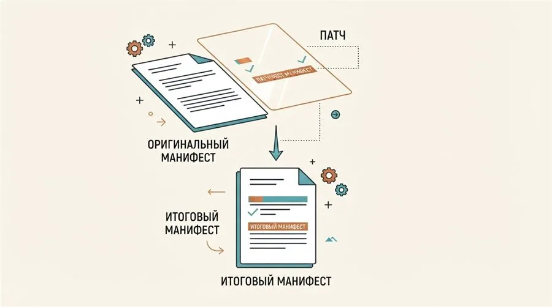
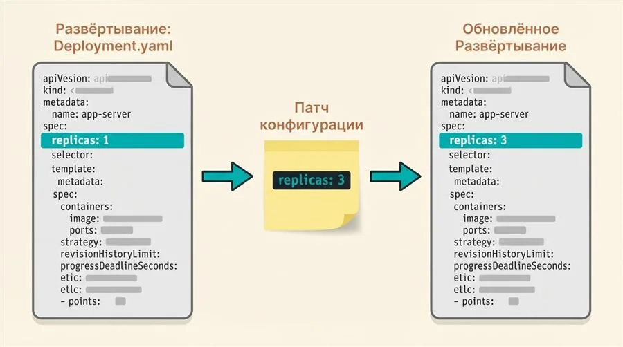
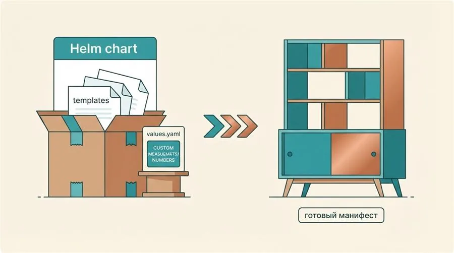
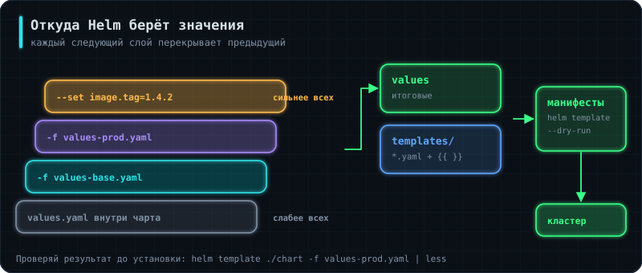

В уроке 5.1 и 5.2 манифесты применялись через kubectl apply -f вручную, по одному файлу. Это нормально для разового разворачивания, но если приложение нужно разворачивать снова и снова — в разных окружениях, с разными настройками — вручную редактировать и отправлять одни и те же файлы становится утомительно и чревато ошибками. Kustomize и Helm — два разных инструмента, решающих именно эту проблему, но по-разному устроенных: полезно понимать оба, потому что в реальных проектах встречается и то, и другое.
📘Словарик на будущее
Kustomize — инструмент, который не создаёт новые манифесты, а патчит («накладывает изменения» на) уже существующие, без шаблонного языка.
Base / overlay — базовая конфигурация и её вариации для конкретных окружений (production, staging и т.д.).
Helm chart — пакет с шаблонами манифестов Kubernetes и файлом настроек, аналог пакета в apt или npm, но для Kubernetes.
values.yaml — файл с конкретными значениями, которые подставляются в шаблоны Helm-чарта.
Release — конкретный установленный в кластер экземпляр Helm-чарта с определённым именем.
// шаг 2/23 · теория · ~1 мин
Проблема: зачем вообще нужен Helm или Kustomize
Аналогия: разворачивание приложения через отдельные kubectl apply — как каждый раз вручную переписывать один и тот же типовой договор от руки, меняя в нём пару цифр. Рано или поздно где-нибудь опечатаешься или забудешь поменять нужное поле.
Любое чуть более сложное приложение в Kubernetes — это не один манифест, а сразу несколько: Deployment, Service, ConfigMap, Secret, Ingress и так далее. Развернуть их один раз — не проблема, но при повторных развёртываниях (обновление версии, разные окружения, разные клиенты) приходится либо руками менять значения в каждом манифесте, либо городить собственные скрипты. Helm и Kustomize решают эту задачу — но принципиально разными способами, и понимание разницы важно.
// шаг 3/23 · теория · ~1 мин
Kustomize: патчинг вместо шаблонов
Аналогия: если Helm — это бланк договора с пропусками для заполнения (шаблон), то Kustomize — это готовый подписанный договор плюс отдельный лист с поправками, приложенный сверху: сам оригинал никто не трогает.
kustomize version
kubectl version --client -o yaml | grep kustomize
Ключевое отличие Kustomize от Helm — он не использует шаблонизацию ({{ }}) внутри самих манифестов. Вместо этого он берёт уже готовые, обычные YAML-манифесты и применяет к ним декларативные патчи: меняет namespace, добавляет метки, генерирует Secret и ConfigMap, меняет отдельные поля — всё это описывается отдельно, а исходные файлы остаются нетронутыми.

// шаг 4/23 · теория · ~1 мин
Структура base + overlays
Аналогия: base — это типовой чертёж здания, единый для всех филиалов компании. overlay — это лист поправок для конкретного филиала: «в этом городе добавить пандус для инвалидов, а в оффлайне поставить другой цвет вывески» — сам чертёж при этом не меняется.
base/ содержит общие для всех окружений манифесты — то, что не зависит от того, продакшн это или тестовый стенд. overlays/production/ содержит только то, что отличается именно для продакшна: конкретные значения ConfigMap, конкретные секреты, точечные патчи поверх базовых манифестов.
// шаг 5/23 · теория · ~1 мин
kustomization.yaml: что объявляет конфигурация
Аналогия: kustomization.yaml — оглавление и список изменений одновременно: какие файлы вообще участвуют в сборке и что именно с ними нужно сделать.
Файл kustomization.yaml в base/ перечисляет, какие манифесты входят в базовую конфигурацию (resources). У overlay свой kustomization.yaml, который ссылается на base/ как на источник и добавляет к нему свои патчи и генераторы — то есть overlay не копирует манифесты, а именно наслаивается поверх base.
// шаг 6/23 · теория · ~1 мин
Оверлей production: генераторы ConfigMap и Secret
Аналогия: вместо того чтобы вручную прописывать ConfigMap в base (общий для всех окружений чертёж), Kustomize сам генерирует его из простого списка пар ключ-значение — конкретного для этого окружения.
configMapGenerator и secretGenerator в overlay создают ConfigMap и Secret прямо из списка значений, без отдельного YAML-файла для каждого — и, что важно, разные overlay (production, staging) могут генерировать разные значения из одного и того же base.
// шаг 7/23 · теория · ~1 мин
Патч: точечное изменение количества реплик
Аналогия: вместо того чтобы переписывать весь чертёж здания ради одного изменения — «добавить два этажа» — к нему просто прикладывается отдельный лист: «изменить этажность объекта X на значение Y».
Патч — это частичный манифест: указывается только то, что нужно изменить (в данном случае — replicas: 3), а не переписывается весь Deployment целиком. Kustomize сам находит нужный объект по target и подменяет в нём только указанное поле.

// шаг 8/23 · теория · ~1 мин
Сборка итогового конфига и применение
Аналогия: Kustomize сначала «печатает» итоговый документ со всеми внесёнными поправками (можно прочитать перед подписанием), и только потом, если всё устраивает, подаёт его на подпись (в кластер).
kubectl kustomize показывает итоговый результат сборки base + overlay + патчи в виде обычного YAML, без применения к кластеру — удобно для проверки перед реальным деплоем. kubectl apply -k делает то же самое, но сразу применяет результат к кластеру. После разворачивания, как и в предыдущих уроках, стоит прогнать функциональные тесты Postman, чтобы убедиться, что приложение действительно работает, а не просто «манифесты применились без ошибок».
// шаг 9/23 · теория · ~1 мин
Helm chart: структура пакета
Аналогия: если Kustomize работает с готовыми чертежами и поправками к ним, то Helm chart — это конструктор мебели с инструкцией и списком деталей: подставляешь свои размеры (values), и на выходе получаешь собранный, готовый к использованию манифест.
Команда helm create создаёт готовый скелет чарта: Chart.yaml с метаданными (имя, версия), values.yaml с настройками по умолчанию и templates/ с шаблонами манифестов для Deployment, Service, Ingress и других объектов.

// шаг 10/23 · теория · ~1 мин
values.yaml и шаблонизация
Аналогия: шаблон манифеста — это письмо с пропусками вида «Уважаем___ [Имя]___», а values.yaml — конкретные данные, которыми эти пропуски заполняются при печати письма.
В отличие от Kustomize, шаблоны Helm содержат настоящий язык шаблонизации ({{ .Values.xxx }}) — при установке чарта Helm подставляет в шаблон реальные значения из values.yaml (или переопределённые через --set при установке) и только затем отправляет получившиеся манифесты в кластер.
▶ схемаПопробуй сама: values + шаблон = манифест
Интерактивная схема загружается…
// шаг 11/23 · теория · ~2 мин
Жизненный цикл релиза: package, install, upgrade
Аналогия: package — упаковать готовую мебель в коробку для доставки; install — впервые собрать и поставить её в конкретной комнате под своим названием; upgrade — заменить отдельные детали в уже собранной мебели, не разбирая её с нуля.
helm package mychart
# создаёт mychart-0.1.0.tgz
helm install my-release ./mychart-0.1.0.tgz --namespace production --create-namespace
kubectl get all -n production
# меняем что-то в values.yaml, например replicaCount: 3
helm upgrade my-release ./mychart-0.1.0.tgz --namespace production
helm package упаковывает чарт в архив .tgz — удобный формат для хранения и передачи версии чарта. helm install разворачивает чарт в кластер под конкретным именем релиза (my-release) и в конкретном namespace — один и тот же чарт можно установить несколько раз под разными именами (например, для разных клиентов). helm upgrade применяет изменения к уже существующему релизу, не удаляя и не пересоздавая его с нуля — Helm сам вычисляет разницу и обновляет только изменившиеся объекты. После обновления, как и в Kustomize-варианте, стоит прогнать функциональные тесты Postman на живом приложении.
Помимо install/upgrade, у Helm есть встроенная история версий релиза — это одно из главных преимуществ Helm перед голым kubectl apply:
helm history my-release --namespace production
helm rollback my-release 2 --namespace production
Каждый helm upgrade не стирает предыдущую версию, а сохраняет её в истории релиза как отдельную ревизию. helm history показывает список всех прошлых ревизий с номерами. helm rollback my-release 2 в одну команду возвращает релиз к состоянию ревизии №2 — без ручного поиска, какие именно манифесты были раньше, и без необходимости заново собирать и накатывать старую версию чарта вручную. У Kustomize такого встроенного механизма нет — откат через него означает применить старую версию манифестов заново через git checkout и kubectl apply -k.
// шаг 12/23 · теория · ~2 мин
Откуда берутся значения и как проверить результат заранее
Аналогия: значения в Helm накладываются как слои краски — каждый следующий перекрывает предыдущий, и видно только верхний. Знать порядок слоёв важнее, чем знать сами цвета.

Значения приходят из трёх мест, и каждое следующее перекрывает предыдущее:
# самый слабый слой — values.yaml внутри чарта
helm install app ./mychart
# свой файл значений перекрывает встроенный
helm install app ./mychart -f values-prod.yaml
# несколько файлов: каждый следующий сильнее предыдущего
helm install app ./mychart -f values-base.yaml -f values-prod.yaml
# --set перекрывает всё
helm install app ./mychart -f values-prod.yaml --set image.tag=1.4.2
Отсюда типичная схема в реальных проектах: общий values.yaml в репозитории, файл на окружение (values-staging.yaml, values-prod.yaml), а --set — только для тега образа, который подставляет CI/CD.
Перед установкой чарт стоит проверить, и для этого есть три разные команды:
helm lint ./mychart # структура чарта и синтаксис шаблонов
helm template app ./mychart -f prod.yaml # напечатать итоговый YAML, не трогая кластер
helm install app ./mychart --dry-run --debug # то же + проверка манифестов API-сервером
helm template — главная команда при разборе чужого чарта. Прежде чем ставить в кластер что-то из интернета, её вывод читают глазами: там видно, какие права запрашиваются, какие образы тянутся и какие тома монтируются.
// шаг 13/23 · теория · ~2 мин
Шаблоны всерьёз: условия, циклы и вспомогательные шаблоны
Аналогия:values.yaml из §9 — бланк с пропусками. Здесь начинается настоящий текст договора с оговорками «если сторона А, то пункт 5 не применяется».
Условие — чтобы Ingress создавался только там, где он нужен:
{{- if .Values.ingress.enabled }}
apiVersion: networking.k8s.io/v1
kind: Ingress
metadata:
name: {{ include "mychart.fullname" . }}
spec:
rules:
{{- range .Values.ingress.hosts }}
- host: {{ .host | quote }}
{{- end }}
{{- end }}
Три конструкции, без которых не читается ни один реальный чарт:
Запись
Что делает
{{- if ... }} … {{- end }}
Включает кусок манифеста по условию
{{- range ... }}
Повторяет блок для каждого элемента списка
{{ include "имя" . }}
Вставляет именованный шаблон из _helpers.tpl
{{ .Release.Name }}
Имя релиза — доступно всегда, даже без values
{{- toYaml .Values.resources | nindent 12 }}
Вставляет целый блок YAML с нужным отступом
Дефис в {{- убирает лишний перевод строки — без него в готовом YAML появляются пустые строки, которые ломают структуру.
Файл templates/_helpers.tpl — место для повторяющихся кусков. Классический пример: имя релиза и набор меток, которые нужны в каждом манифесте.
Helm не понимает YAML, он работает с текстом. Строка {{ toYaml .Values.resources }} вставит блок без отступа и сломает манифест. Правильно — {{- toYaml .Values.resources | nindent 12 }}: функция nindent добавляет перевод строки и отступ в 12 пробелов.
Отлаживать это глазами бесполезно — надо смотреть helm template и считать пробелы в выводе.
// шаг 14/23 · теория · ~2 мин
Зависимости: чарт внутри чарта
Аналогия: приложению нужна база и кеш — вместо того, чтобы описывать их с нуля, чарт объявляет их как зависимости, ровно как requirements.txt в Python из урока 2.1.
Поле condition позволяет отключать зависимость целиком: в проде базу берут управляемую у облака, а подчарт с PostgreSQL включают только на тестовом контуре.
⚠️Bitnami уже не тот
Чарты Bitnami годами были стандартом «по умолчанию», поэтому они в каждом втором туториале. С августа 2025 года Broadcom перевёл бесплатный каталог на платную модель: версионированные образы уехали в bitnamilegacy и больше не получают обновлений безопасности, а чарты по умолчанию ссылаются на эти старые образы. Пример выше показывает механизм зависимостей, но в новых проектах для PostgreSQL бери оператор CloudNativePG или управляемую базу облака, а для остального — официальные чарты самих проектов.
// шаг 15/23 · теория · ~2 мин
Репозитории чартов и OCI
Аналогия: обычный репозиторий чартов — сайт со списком пакетов, как apt-репозиторий. OCI — хранение чарта прямо в реестре образов, рядом с самим образом приложения.
helm repo add prometheus-community https://prometheus-community.github.io/helm-charts
helm repo update
helm search repo kube-prometheus-stack
helm show values prometheus-community/kube-prometheus-stack | less # какие параметры вообще есть
Современный способ — хранить чарт в том же реестре, что и образ:
Преимущество очевидно: чарт версии 0.1.0 и образ версии 1.4.2 лежат в одном месте, с одинаковыми правами доступа и одинаковым сканированием на уязвимости. Отдельный сервер репозитория чартов больше не нужен.
Команда helm show values — обязательный первый шаг при работе с чужим чартом. Она печатает все доступные параметры с их значениями по умолчанию, и без неё настройка превращается в угадывание.
// шаг 16/23 · теория · ~1 мин
Установка и обновление в CI/CD: флаги, которые меняют всё
Аналогия:helm install без флагов — как отправить грузовик и не спросить, доехал ли он. Флаги ниже превращают команду в проверяемую операцию с гарантированным исходом.
Ставит, если релиза нет, обновляет, если есть. Одна команда для любого состояния — идемпотентность, как в Ansible из урока 4.3
--atomic
При неудаче автоматически откатывает релиз к прошлой ревизии. Без него неудачное обновление оставляет кластер в промежуточном состоянии
--timeout 5m
Сколько ждать готовности. Работает вместе с --atomic
--wait
Ждать, пока поды станут готовыми (--atomic включает его сам)
--create-namespace
Создать пространство имён, если его нет
Сочетание upgrade --install с --atomic — стандартный способ выкладки из конвейера. Оно даёт ровно то, чего мы добивались вручную в уроке 3.2: либо новая версия работает, либо всё вернулось как было, и промежуточных состояний не бывает.
--wait при этом опирается на пробы из урока 5.1: без настроенных readinessProbe Helm считает под готовым сразу после запуска и рапортует об успехе, даже если приложение не поднялось.
// шаг 17/23 · теория · ~2 мин
Где Helm ломается: четыре вещи, которые надо знать заранее
🛑Откат не возвращает данные
helm rollback откатывает манифесты, но не содержимое дисков. Если обновление приложения выполнило миграцию базы, откат чарта вернёт старый код, работающий с новой схемой данных, — и станет только хуже. Миграции надо делать обратимо совместимыми: сначала схема, которая работает и со старым, и с новым кодом, потом код.
🛑CRD не обновляются
Helm устанавливает содержимое папки crds/ при первой установке и никогда не трогает его при helm upgrade. Обновление оператора, у которого поменялись определения ресурсов, требует применить CRD вручную. Симптом — поля из новой версии молча игнорируются.
⚠️--reuse-values игнорирует изменения в чарте
Флаг берёт значения предыдущего релиза и накладывает поверх только то, что передано в этой команде. Новые параметры, появившиеся в values.yaml чарта, не применятся вовсе. Правильная привычка — всегда передавать полный набор через -f, а состояние хранить в git, а не в релизе.
⚠️Релиз хранится в кластере
Helm держит состояние релиза в Secret'ах внутри пространства имён (sh.helm.release.v1.*). Удалили пространство имён — потеряли историю релиза и возможность отката. Смотреть это можно так:
kubectl get secret -n production -l owner=helm
helm get values app -n production # с какими значениями стоит сейчас
helm get manifest app -n production # что реально применено в кластер
Команда helm get manifest — лучший ответ на вопрос «а что вообще сейчас развёрнуто».
// шаг 18/23 · теория · ~1 мин
Helm или Kustomize: как выбирать
Оба инструмента живые, и спор между ними на собеседовании — проверка на здравый смысл, а не на знание фактов.
Ситуация
Что выбрать
Раздаёте приложение другим людям или командам
Helm — параметры, версии, один архив
Ставите чужое ПО (Prometheus, Ingress, cert-manager)
Helm — других вариантов почти нет
Свои манифесты, два-три окружения с мелкими отличиями
Kustomize — проще, без шаблонного языка
Нужен откат одной командой
Helm — у Kustomize встроенного механизма нет
Хотите читать манифесты глазами без рендеринга
Kustomize — это обычный YAML
GitOps через ArgoCD
Работают оба; ArgoCD сам рендерит и то, и другое
Правдивый ответ, который ценится: «Чужое ставим Helm'ом, потому что чарты уже написаны. Своё — по ситуации: если конфигурация раздаётся наружу и параметризуется, Helm; если это наши манифесты для наших же окружений, Kustomize читается легче и не превращает YAML в программу».
Существует и распространённый гибрид: Helm рендерит чарт, а Kustomize патчит результат — так дотягивают чужой чарт до своих требований, не форкая его.
// шаг 19/23 · итоги · ~2 мин
Если запомнить только главное
И Helm, и Kustomize решают одну проблему — не повторять развёртывание манифестов вручную снова и снова — но разными способами.
Kustomize патчит уже существующие обычные манифесты без шаблонного языка; Helm использует настоящие шаблоны с плейсхолдерами.
base/overlays в Kustomize — общая конфигурация плюс точечные различия для конкретного окружения.
configMapGenerator/secretGenerator в overlay создают ConfigMap/Secret прямо из списка значений.
Патч меняет только указанное поле объекта, не переписывая весь манифест целиком.
Helm chart — пакет с Chart.yaml, values.yaml и templates/, созданный командой helm create.
values.yaml задаёт значения, которые Helm подставляет в шаблоны при установке чарта.
helm install создаёт именованный релиз в конкретном namespace; helm upgrade обновляет уже существующий релиз без полного пересоздания.
helm history/helm rollback позволяют откатиться к любой прошлой ревизии релиза одной командой — у Kustomize встроенного аналога нет.
Порядок значений:values.yaml чарта → свои файлы -f (правый сильнее) → --set. Побеждает самый правый.
Перед установкой: helm lint, helm template (напечатать итоговый YAML без кластера), --dry-run. Чужой чарт всегда сначала прогоняют через helm template и читают вывод.
helm show values <чарт> печатает все доступные параметры — первый шаг при работе с любым чужим чартом.
Отступы в шаблонах: только {{- toYaml ... | nindent N }}. Helm работает с текстом, а не с YAML, и сам отступы не выровняет.
Стандартная команда выкладки из CI: helm upgrade --install ... --atomic --timeout 5m — идемпотентно и с автоматическим откатом при неудаче.
--atomic и --wait опираются на readinessProbe: без проб Helm рапортует об успехе, даже если приложение не поднялось.
helm rollback не возвращает данные — только манифесты. Откат после миграции базы делает хуже, а не лучше.
CRD не обновляются при helm upgrade — только при первой установке. Обновление оператора требует применить их вручную.
Состояние релиза лежит в Secret'ах кластера. helm get manifest показывает, что реально развёрнуто; helm get values — с какими значениями.
Выбор: чужое ПО — Helm, свои манифесты для своих окружений — обычно Kustomize. Гибрид (Helm рендерит, Kustomize патчит) — нормальная практика.
// шаг 20/23 · практика
Практика
Задания делаются на своей машине или в облаке. Отметь задание, когда выполнила проверку из его описания, — за каждое начисляется опыт.
Задание 5 (публикация чарта в OCI-реестр) — финальный шаг M4.
Задание 1 — Kustomize
Сделай base с Deployment и Service и оверлеи dev и prod: разное число реплик, разные ConfigMap через генератор, общие метки. Проверка:kubectl kustomize overlays/prod выдаёт итоговые манифесты; изменение ConfigMap меняет хеш в имени и перезапускает поды.
Задание 2 — свой чарт
Создай чарт приложения: шаблоны Deployment, Service, Ingress (включаемый через ingress.enabled), helper для меток в _helpers.tpl. Проверка:helm lint проходит; helm template . --set ingress.enabled=false не содержит Ingress.
Задание 3 — релиз и откат
Установи чарт, обнови с другим тегом образа через helm upgrade --install --atomic --wait, затем откати. Проверка:helm history показывает ревизии; неудачный upgrade с битым образом с --atomic откатывается сам.
Задание 4 — зависимость
Добавь PostgreSQL как зависимость чарта (Bitnami или CloudNativePG) и передай ему параметры через values. Проверка:helm dependency update скачивает зависимость, одна команда helm install поднимает приложение с базой.
Задание 5 — публикация
Упакуй чарт и опубликуй в OCI-реестр GitLab или GitHub. Проверка:helm install из oci://... на чистом кластере работает.